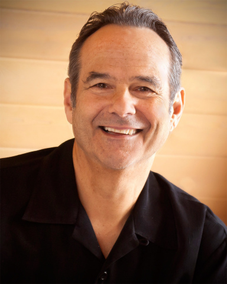

聴く相手と「つながる」
『大勢』ではなく『一人ひとり』と目を見合わせ、心を通わせる練習をします。演技のように一方的に話すのではなく、誠実で温かいやり取りができるようになります。
企業向け
人前で話すのってなんか苦手、、を克服しましょう
対象と目的「会議で声が震える」「プレゼン前夜に眠れない」——そんな方へ。技法を超えた『自分らしい言葉』と『聴く姿勢』を安心安全な場で体得し、存在感ある対話の力を磨くワークショップ。
提供者倉田 隆弘氏（Speaking Circles®日本人唯一の認定ファシリテーター）。株式会社メタ・フォーカス代表、現在は国際コーチング連盟プロフェッショナル認定コーチ（PCC）。
形式と料金全3回のセッションで料金は300,000円（120分×全3回／最大6名まで）。請求書払い。第1回はオフライン開催、第2・3回はZoomでのオンライン開催（平日10:00〜17:00）。
PURPOSE
安心・安全な場で、自分の『存在感（プレゼンス）』を育てます。
『大勢』ではなく『一人ひとり』と目を見合わせ、心を通わせる練習をします。演技のように一方的に話すのではなく、誠実で温かいやり取りができるようになります。
無理に緊張を抑え込む必要はありません。穏やかな手法で恐怖心を和らげ、肩の力を抜いて、いつもの自分のままで人前に立てるようになります。
『次に何を話そう』という焦りや準備を手放し、静かに自分を信じて待つことで、準備した原稿以上に自然な言葉が溢れ出す感覚を体験できます。
Speaking Circles®
1989年にリー・グリックスタインによって設立された、パブリックスピーキングとコミュニケーションのための革新的なアプローチです。
「上手く話そう」とする技術を学ぶ場所ではありません。少人数で否定のない安心できる場（サークル）の中で、まずは自分自身が落ち着き、目の前の相手と深くつながる感覚を養います。「沈黙」を恐れず、自分の内側から自然に溢れてくる言葉を待つ練習を通じて、あなた本来の魅力や自信を引き出すワークショップです。
「上手く話そうとすればするほど、言葉が詰まってしまう」。現代のビジネスシーンでは、プレゼンスキル（技術）以上に、話し手の誠実さや存在感（プレゼンス）が信頼を左右します。本ワークショップは、小手先のテクニックではなく、対話の土台となる「安心感」と「つながり」を構築するトレーニングです。

CONTENS
「なぜ緊張するのか」ではなく「緊張ごと受け入れる」。6つのプログラムで、話し方の根っこを変えていく。
「話す内容」を考える前に、まずは目の前の一人と「静止画のように」視線を合わせ、心のつながりを確認する基本ワークです。沈黙を恐れず、相手の存在をただ受け入れることで、話し手と聞き手の間に深い安心感を醸成します。
大勢に向けて漫然と話すのではなく、「一文を一人に届ける」練習です。一人の目を見て話し、文章の句読点で視線を切り替え、次の一人とつながります。これにより、演技ではない誠実な一対一の対話の積み重ねを体得します。
言葉が途切れた際の「気まずい沈黙」を、自分の内側から新しい言葉が生まれるための「豊かな時間」へと書き換えます。焦って言葉で埋めるのではなく、静寂の中で自分を信じて待つことで、原稿にはない本質的な言葉を引き出します。
聞き手が頷きや相槌（リアクション）を一切行わず、ただ100%の関心を話し手に向け続けるワークです。話し手は「評価されない安心感」の中で自己表現を深め、聞き手は「反応する技術」を手放して「本質的に聴く」姿勢を養います。
人前に立った時の身体の緊張に意識を向け、足の裏が地面に着いている感覚（グラウンディング）を確認します。思考（頭）に偏った意識を身体全体に戻すことで、「地に足の着いた」落ち着きのあるプレゼンスを確立します。
ワークの最後には、話の「内容」ではなく、話し手の「あり方」や「存在感」から受け取ったポジティブな印象のみを共有します。自分の個性が他者にどう響いたかを知ることで、自己肯定感を高め、本来の魅力を解放します。
FACILITATOR
国際コーチング連盟プロフェッショナル認定コーチ（PCC）

TAKAHIRO KURATA
【現任】
・株式会社メタ・フォーカス【日本】：CEO（MetaFocus Inc.）【経歴】
・国際コーチング連盟日本支部【日本】：理事【資格】
・国際コーチング連盟：プロフェショナル認定コーチ（PCC）VOICE
「体験してみて、初めてわかることがある」——テスト参加したDiSAメンバーの声。

（経営者・マネジメント職）
テクニックに頼り切っていた自分に気づかされました。「話す筋力を鍛える」という言葉がまさにしっくりくる、今後の自己研鑽のヒントが得られる貴重な時間でした。

（ディレクター）
オフラインでの実施はまた別物で、オンラインよりも空間全体が見えるため、自分の癖や話し方についてより多くの発見がありました。より実戦に近い「筋肉」が鍛えられる感覚です。

（経営者・PM）
リアクションを抑えて聴く難しさを通じ、普段いかに「聞いているフリ」をしていたかを痛感しました。表面的な反応ではなく、話そのものに集中する重要性を学べます。

（ディレクター）
「目を見て話す」ことを徹底することで、自分がこれまでいかに相手を見ていなかったか、そしてそれがどう影響していたかに気づけました。自己表現のしやすさが格段に変わります。

（経営者・HR）
心地よい緊張感と、その緊張感が解けた瞬間の緩和のバランスが絶妙です。ワークショップ後の参加者同志の雰囲気も非常に良く、前向きなエナジーが生まれる場だと感じました。

（経営者・エンジニア）
人前で話すのが苦手な人にとって、これほど良い訓練はないと思います。仕事で凝り固まったコミュニケーションの癖を解放できる！他の人にもぜひ体験してほしいと思える内容でした。
OUTLINE
第1回：オフライン、第2、3回：オンラインで実施します
オフィス、会議室をお借りしてオフラインでのワークショップ
DiSAでZoomを用意してオンラインでのワークショップ
DiSAでZoomを用意してオンラインでのワークショップ
DETAIL
・沈黙を恐れず、落ち着いて言葉を待てる精神的なゆとり
・聴衆一人ひとりと目が合う、深いコンタクトスキル
・自分の経験や知恵が自然に言葉になる、飾らない自己表現力
・120分 × 3回：300,000円（初回のみ別途交通費）
・支払い方法：請求書
・参加人数：6名まで
・第1回：依頼企業様のオフィス、会議室などで実施
・準備物：椅子（参加人数分）、プロジェクター
・第2、3回：日時調整のうえZoomを発行
・1セッション120分 / 平日10:00〜17:00対応
INQUIRY
メールはASAPで返信します
お問い合わせに進む